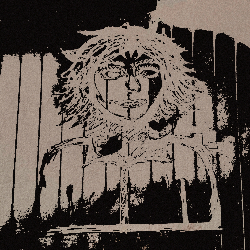

.jpeg)
.jpeg)
.jpeg)

parece que es normal
LANZAMIENTO: 25 DE JULIO DE 2025
El Concepto
9 De 10 Soy Terco trata sobre el intento de salvar algo que parecia perdido, ignorando las advertencias simplemente por la propia naturaleza de ser terco. Explora la duda de si el tiempo será suficiente para reparar el daño, manteniendo siempre la esperanza de lo mejor para alguien más.
parece que es normal aborda el dolor que puede surgir dentro de una relación, pero también la forma inocente en la que volvemos a un estado donde "todo está bien". Haciendo una sátira sobre la fragilidad emocional.
Proceso Creativo
Componer estas canciones fue un proceso sumamente personal; sentí que hacerlas tuvo un efecto terapéutico y fluyeron de forma muy natural. En "9 de 10 soy terco" quise mantener un enfoque minimalista, usando solo la guitarra para centrar la atención en la letra y la interpretación. Decidí cantarla en voz baja, muy cerca del micrófono, para lograr un sonido más íntimo y personal.
En "Parece que es normal" también me propuse experimentar con la estructura: comenzar sin batería, incluir una sección donde la voz no se entiende nada por los efectos (inspirado en The Voidz) y cerrar con un cambio hacia un ritmo más positivo y enérgico al final.
El Arte Visual
Como al principio no estaba seguro de lanzar "9 de 10 soy terco" como sencillo, le había diseñado una portada con un dibujo hecho por alguien muy especial. Al final, decidí que el EP debía tener a esa misma persona en la portada, capturada en una foto que tomé. Me gustó mucho la simpleza y la belleza de la foto; tiene una estética que la hace parecer una pintura.